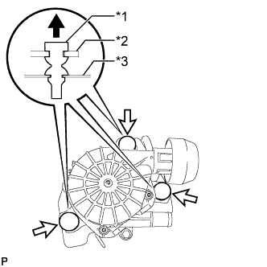
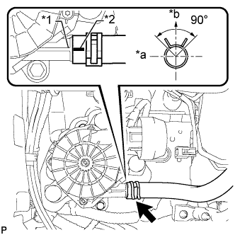

ВОЗДУШНЫЙ НАГНЕТАТЕЛЬ > УСТАНОВКА |
| 1. УСТАНОВИТЕ ВОЗДУШНЫЙ НАГНЕТАТЕЛЬ |
|  |
Установите воздушный нагнетатель на кронштейн и закрепите 3 крепежных детали изолятора воздушного нагнетателя.
| *1 | Изолятор |
| *2 | Воздушный нагнетатель |
| *3 | Кронштейн воздушного нагнетателя |
 | Верхний |
Закрепите зажим разъема воздушного нагнетателя.
| 2. УСТАНОВИТЕ ВОЗДУШНЫЙ НАГНЕТАТЕЛЬ В СБОРЕ |
Закрепите воздушный нагнетатель в сборе 3 болтами.
Подсоедините разъем воздушного нагнетателя и закрепите зажим жгута проводов.
| 3. ПОДСОЕДИНИТЕ ШЛАНГ СИСТЕМЫ ПОДАЧИ ВОЗДУХА В НЕЙТРАЛИЗАТОР № 1 |
|  |
Подсоедините шланг № 1 системы подачи воздуха в нейтрализатор таким образом, чтобы метка, нанесенная на него краской, оказалась совмещенной с ребром воздушного нагнетателя, как показано на рисунке.
| *1 | Ребро |
| *2 | Метка, нанесенная краской |
| *a | Передняя сторона |
| *b | Верх |